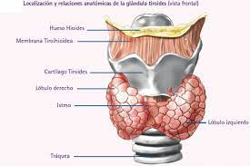
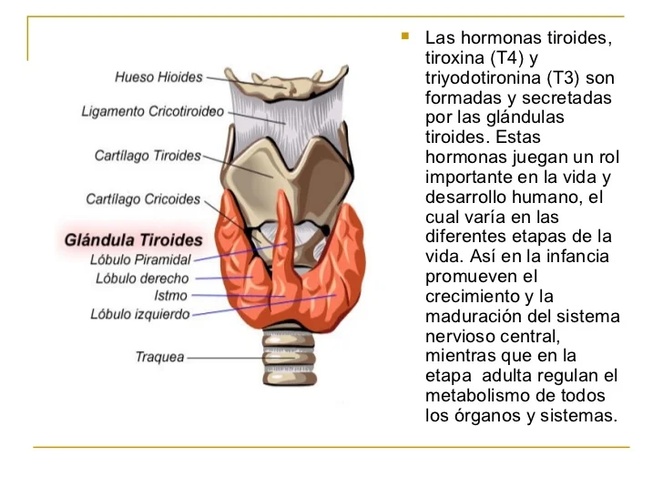

LA TIROIDES
La hormona de la tiroides, también conocida como tiroxina, es una hormona producida por la glándula tiroides. Es fundamental para el funcionamiento adecuado del cuerpo, ya que regula el metabolismo, el crecimiento y el desarrollo. La glándula tiroides se encuentra en la parte frontal del cuello y produce dos hormonas principales: la tiroxina (T4) y la triyodotironina (T3). Estas hormonas son liberadas al torrente sanguíneo y actúan en casi todas las células del cuerpo, afectando su funcionamiento. La hormona tiroidea tiene un papel crucial en el metabolismo basal del cuerpo, es decir, la cantidad de energía que se necesita para mantener las funciones básicas del organismo en reposo. Regula la velocidad a la que se queman las calorías y cómo se utilizan los nutrientes. Además, también influye en la temperatura corporal, el ritmo cardíaco, la presión arterial y la función cerebral. Cuando hay un desequilibrio en la producción de hormonas tiroideas, pueden ocurrir problemas de salud. Por ejemplo, si la glándula tiroides produce demasiada hormona tiroidea, se puede desarrollar hipertiroidismo. Los síntomas incluyen pérdida de peso inexplicada, nerviosismo, sudoración excesiva y aumento del ritmo cardíaco. Por otro lado, si la glándula tiroides produce muy poca hormona tiroidea, se puede desarrollar hipotiroidismo. Los síntomas incluyen fatiga, aumento de peso inexplicado, depresión, piel seca y pérdida de cabello. El diagnóstico de los trastornos de la tiroides se realiza mediante análisis de sangre para medir los niveles de hormonas tiroideas. El tratamiento varía según el trastorno, pero puede incluir medicamentos para regular los niveles hormonales o incluso cirugía en algunos casos. En resumen, la hormona de la tiroides desempeña un papel crucial en el funcionamiento adecuado del cuerpo. Regula el metabolismo, el crecimiento y el desarrollo. Los desequilibrios en la producción de hormonas tiroideas pueden tener un impacto significativo en la salud, pero con el diagnóstico y tratamiento adecuados, es posible manejar estos trastornos de manera efectiva.
ANATOMIA DE LA GLANDULA TIROIDEA

OTROS EJEMPLOS
